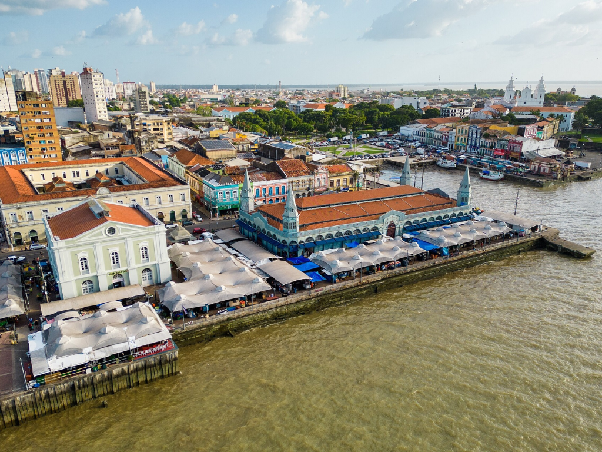

O Pará é um estado localizado na região Norte do Brasil, sendo o segundo maior do país em extensão territorial. Sua capital é Belém. O estado é conhecido por sua rica cultura, influenciada por indígenas, africanos e europeus, manifestada no carimbó, no círio de Nazaré e na culinária típica. A economia paraense é baseada no extrativismo mineral (ferro, bauxita, ouro) e vegetal, além da agricultura e da pecuária.

Voltar